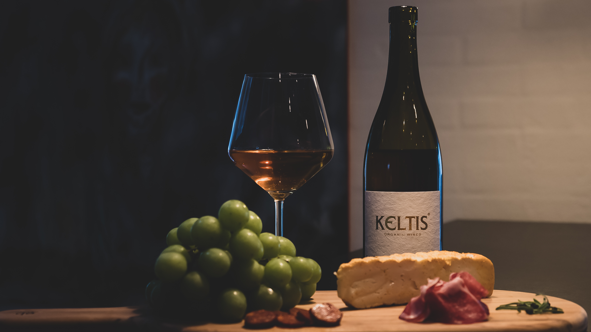

Historien bag orangevin
Det rigtige hvidvin!
HVAD ER ORANGEVIN?
Orangevin er hvidvin, der er lavet som rødvin. Altså vin, hvor skallerne fra de grønne druerne ligger med i mosten under eller efter gæringen for at afgive smag og tanniner. Skallerne afgiver en orange farve – deraf navnet orangevin. Denne udblødning kaldes maceration, som man kender det fra rødvin og rosé. Her ses det tydeligt at det er skallerne der bidrager med farvestoffer, smagsstoffer og tannin. Rosé har ofte kun macereret i få timer, hvor rødvin har væsentligt længere kontakt med skallerne og dermed giver kraftigere smag og farve.
DEN RIGTIGE MÅDE AT LAVE HVIDVIN PÅ
Med orangevin kan macerationen vare fra få dage til mange uger eller måneder. Der er ikke nogle regler for hvor længe orangevin skal have macereret, men som regel vil de fleste orangevine mindst have haft adskillige dages skalkontakt. Der findes også orangevine som har forlænget kontakten med skallerne selv efter gæringen er endt. I nogle tilfælde i flere år.
| Langvarig skalkontakt | Kortvarig skalkontakt | Ingen skalkontakt | |
|---|---|---|---|
| Blå druer | Rødvin | Rosé | Hvidvin |
| Grønne druer | Orangevin | ||
Orangevin er fantastisk til mad, da den ofte byder ind med syre, friskhed, lyse frugter og tannin og er især god der, hvor man normalt har svært ved at vælge mellem rødvin eller hvidvin. Orangevin har som regel en hvidvins friske syre og milde aroma, mens mundfornemmelsen og smagsindtrykkene kan sende tankerne i retning af rødvin.
Orangevin udspringer fra ældgamle traditioner, der stammer fra Georgien, og siden spredtes til Europa. Nu til dags laves orangevin i næsten alle vinlande, men dyrkes i særlig stor stil i Italien, Slovenien, Østrig og Georgien.
I Georgien har man i omkring 8.000 år produceret orangevin. I Georgien kaldes orangevin dog for “Amber Wine” (ravvin). I Italien og Slovenien begyndte produktionen af orangevin for et par hundrede år siden, og indtil 1950’erne var orangevin ganske normal drikke på de italienske og slovenske restauranter. I takt med industrialiseringen af vinproduktion gik orangevin af mode og de “finere” hvidvine uden skalkontakt blev dominerende på markedet.
I midten af 1990’erne genoplivede Stanislao Radikon og Josko Gravner for alvor orangevin. De var begge inspireret af den gamle måde at lave hvidvin på, og slog sig ned i Oslavia, Friuli-regionen i Italien. Dette er i dag epicentret for orangevin.

Radikon fandt frem til den perfekte drue til orangevin, Ribolla Gialla som er en grøn drue, der har en meget tyk skal, der sikrer orangevinen masser af smag og tanniner. Dette er i dag en af de mest populære druer til produktion af orangevin.
Gravner tog amforaerne, som er store nedgravede lerkrukker, med til Italien. Amforaen siges at være verdens ældste måde at lagre vin på. Gravners orangevine menes i dag at være nogle af de bedste på markedet.
Orangevin er sidenhen blevet meget populært i både medierne, på vinbarer og Michelin-restauranter rundt omkring i verden, men ingen har rigtigt formået at skabe samme popularitet som de slovenske og italienske producenter som fx Radikon og Gravner.
Ligesom med rødvin og moderne hvidvin findes der således et hav af forskellige slags orangevin til forskellige smage og situationer. Vi har beskrevet alle vores orangevine med hvad du kan forvente og til hvilken situation den enkelte orangevin passer.